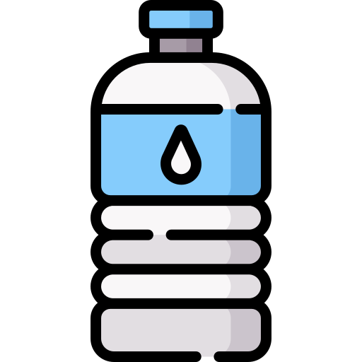

Légumes 
Légumes-feuilles 
- Laitue romaine (éviter la laitue iceberg)
- Épinards (avec modération)
- Cresson
- Roquette
- Pissenlit
- Persil
- Coriandre
- Menthe
- Basilic
- Fenouil
Légumes racines 
- Carottes (en petites quantités)
- Navets (feuilles et racines)
Légumes-fruits 
- Courgettes
- Concombres
- Poivrons (toutes les couleurs)
- Tomates (avec modération, sans les feuilles et les tiges)
Autres légumes 
- Brocoli (feuilles et tiges, éviter les fleurons en grande quantité)
- Céleri
- Choux de Bruxelles
- Chou frisé (kale)
- Endives
- Chou-rave (feuilles et bulbe)
- Radis (feuilles et racines, en petites quantités)
Herbes aromatiques 
- Persil
- Coriandre
- Menthe
- Basilic
- Aneth
- Thym
- Romarin
- Origan
Fruits (en petites quantités)

- Pommes (sans les pépins)
- Bananes
- Fraises
- Framboises
- Mûres
- Myrtilles
- Poires (sans les pépins)
- Ananas
- Mangues
- Pêches (sans le noyau)
- Prunes (sans le noyau)
- Melon
- Pastèque (sans les pépins)
Herbes et graminées 
- Foin de prairie
- Foin de Timothy (foin de fléole des prés)
- Foin de luzerne (surtout pour les jeunes lapins)
- Pissenlit
- Trèfle
- Herbe de blé
Autres

- Branches et feuilles de pommier (non traitées aux pesticides)
- Branches de saule
- Branches de noisetier
- Feuilles de framboisier
- Feuilles de mûrier
Aliments à éviter absolument

- Chocolat
- Produits laitiers
- Aliments sucrés ou gras
- Aliments salés
- Pommes de terre
- Rhubarbe
- Haricots
- Avocat
- Oignons
- Ail
Eau 
- Utilisez de l'eau filtrée ou de l'eau de source pour éviter les contaminants.
- Évitez l'eau du robinet si elle est fortement chlorée ou contient des niveaux élevés de minéraux.
- Changez l'eau quotidiennement pour garantir sa fraîcheur.
- Assurez-vous que les récipients d'eau soient propres et sans algues.
Meilleures Eaux pour les Lapins
-
Eau du Robinet Filtrée
Utiliser un filtre à eau pour éliminer les impuretés, le chlore et les métaux lourds.
Assurez-vous que l'eau du robinet est propre et potable dans votre région.
-
Eau de Source
Eau de source embouteillée, non gazeuse, qui est naturellement pure et généralement sans additifs.
Marques recommandées : Evian, Volvic.
-
Eau Distillée
Eau purifiée par distillation, éliminant les minéraux et les impuretés.
Utilisez cette eau avec modération, car une consommation excessive d'eau distillée peut entraîner une carence en minéraux chez les lapins.
-
Eau Minérale Faible en Sodium
Eau minérale naturelle avec une faible teneur en sodium.
Marques recommandées : Volvic (vérifiez toujours les niveaux de minéraux sur l'étiquette).
-
Eau en Bouteille pour Animaux
Certaines marques offrent de l'eau spécialement conçue pour les animaux, souvent enrichie de nutriments bénéfiques.
Assurez-vous que ces eaux sont sans additifs nocifs pour les lapins.
À Éviter
-
Eaux Gazeuses : Les eaux gazeuses peuvent causer des problèmes digestifs chez les lapins.
-
Eaux Enrichies en Minéraux : Certaines eaux minérales ont des niveaux élevés de certains minéraux qui peuvent ne pas être adaptés aux besoins des lapins.
-
Eaux avec Additifs : Évitez les eaux contenant des arômes, des colorants ou des édulcorants artificiels.
Soins 
- Brosser régulièrement pour éviter la formation de nœuds, surtout pour les lapins à poil long.
- Vérifiez et coupez les griffes régulièrement pour éviter qu'elles ne deviennent trop longues.
- Surveillez les dents et consultez un vétérinaire si elles deviennent trop longues ou causent des problèmes.
- Nettoyez les oreilles pour éviter les infections.
- Vérifiez l'état de santé général et consultez un vétérinaire en cas de doute.
Environnement 
- Assurez-vous que l'espace de vie soit propre, sec et sans courants d'air.
- Fournissez un espace suffisamment grand pour que le lapin puisse bouger librement.
- Offrez des cachettes et des tunnels pour que le lapin se sente en sécurité.
- Utilisez de la litière appropriée et changez-la régulièrement pour maintenir la propreté.
- Assurez-vous que le lapin ait accès à de la lumière naturelle mais évitez l'exposition directe et prolongée au soleil.
Jouets 
- Jouets en bois naturel (non traité) pour ronger et éviter l'ennui.
- Balles en osier ou en foin.
- Tunnels en tissu ou en carton pour explorer et se cacher.
- Jouets en corde naturelle pour mâcher.
- Jouets interactifs pour stimuler mentalement votre lapin.
Remarques
-
Introduisez les nouveaux aliments progressivement pour éviter les problèmes
digestifs.
-
Veillez à ce que les aliments soient frais et non traités aux pesticides.
-
Assurez-vous que les lapins aient toujours accès à de l'eau fraîche et
propre.